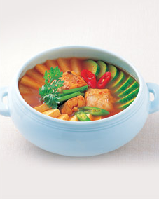

| 월 | 화 | 수 | 목 | 금 |
|---|---|---|---|---|
 재료썰기, 콩나물밥, 비빔밥 |
 완자탕, 너비아니구이 |
 두부조림, 홍합초 |
 두부젓국찌개, 오징어볶음 |
 생선찌개, 풋고추적 |
 장국죽, 제육구이 |
 생선전, 육원전, 표고버섯전 |
 섭산적, 화양적, 지짐누름적 |
 북어구이, 더덕구이 |
 생선양념구이, 무생채 |
 도라이생채, 더덕생채 |
 겨자채, 미나리강회 |
 칠전판, 탕평채 |
 잡채, 육회 |
 배추김치, 오이소박이 |